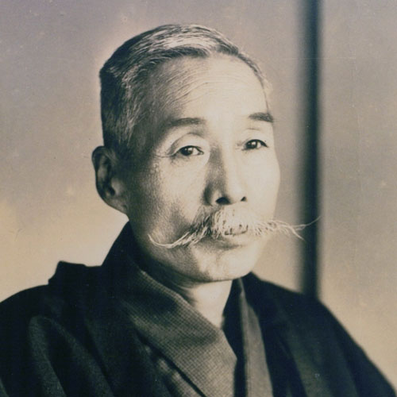
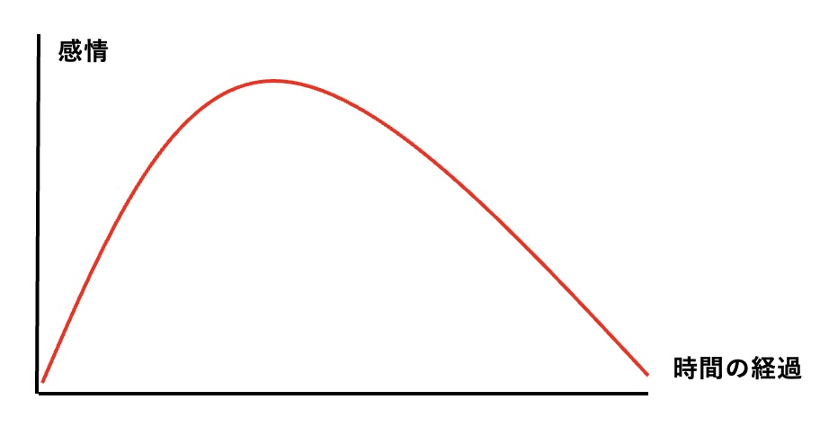

森田療法とは
森田療法は、1919年頃に我が国の精神科医、森田正馬によって創始された神経症に対する精神療法です。森田療法は、対人恐怖や広場恐怖などの恐怖症、強迫神経症、不安神経症（パニック障害、全般性不安障害）、心気症などが主たる治療の対象であり、これまでに高い治療効果をあげてきています。また最近では、慢性化するうつ病やガン患者のメンタルケアなど、幅広い分野に有効と言われています。

■森田正馬博士（1874〜1938）
森田療法を考案した森田正馬は1874年に生まれ、1938年に肺炎で死去された。1898年、東京帝国大学医科大学入学。1903年、東京慈恵会医院医学専門学校教授となる。森田療法の確立は1919年頃といわれている。1937年、東京慈恵会医科大学名誉教授。
森田が着目したのは、多様な神経症症状の背後には、内向的、自己内省的、心配性、小心、敏感、完全主義的性格等の神経質性格（※注）が比較的共通して認められることでした。この神経質性格を基盤にして、「とらわれ」という特有の心理的メカニズムが働き発症すると考えたのです。その心理的メカニズムには、精神交互作用と思想の矛盾が含まれます。精神交互作用とは、注意と感覚が悪循環に作用して、ますます恐れや違和感が強く感じられることです。また、思想の矛盾とは、不可能を可能にしようとする心の葛藤のことです。森田療法では、症状へのとらわれから脱して、「あるがまま」の心の姿勢を獲得できるよう援助します。
「あるがまま」とは、
（1）不安や症状を排除しようとするはからいをやめ、そのままにしておく態度を養うこと。
（2）不安の裏にある生の欲望（向上発展の希求）を建設的な行動に発揮していくこと
…です。
森田療法とは、不安を抱えながらも生活の中で必要なこと（なすべきこと）から行動し、建設的に生きることを教え、実践させる治療方法です。つまり、「あるがまま」という心を育てることによって神経症（不安障害）をのりこえていくことが主眼です。したがって、生き方の再教育とも呼ぶべきものでしょう。
※（注）神経質性格とは
神経症の成因を理解するには、心理的要因、身体的要因、社会的要因の三つが複雑に絡み合っています。神経症の重要な心理的要因としては、もともとどういう性格傾向にあるのかが関係してきます。森田正馬のいう神経症になりやすい典型的な性格傾向には神経質性格があります。神経質性格の特徴には、次の4つがあります。
- 自己内省的、理知的、意識的である
長所…反省心が強く、まじめで責任感が強い。
短所…自己の心身の現象を細かく分析し、わずかの弱点・欠点をも過大視し、劣等感をいだく。観念的理想主義。 - 執着性が強い
長所…ねばり強く、忍耐強い。
短所…物事にこだわりやすく、融通がきかない。 - 感受性が強く心配性
長所…こまかいことによく気がつき、人の気持ちを思いやる。
短所…不安や苦痛に過敏となり、取り越し苦労する。行動は消極的、タイミングを失う。 - 欲望が強い
長所…向上欲・完全欲が強く、努力を惜しまない。几帳面。
短所…完全主義に陥りやすく、不完全に悩む。
森田療法の基本的な観点
1.神経質の発症機制
森田正馬は、神経症の発症機制には、神経質傾向がある人が、何らかの生活上のきっかけを契機に、注意が自己の身体的あるいは精神的変化に向けられ、注意がますます鋭敏となり、それと共に注意がますますその方に固着した状態であると考えました。
森田は、この神経症の症状の成り立ちに、精神交互作用と思想の矛盾が大きく関与していると考えていました。
◎精神交互作用とは
神経症の症状を引き起こす仕組みのひとつとして、森田療法では「精神交互作用」と呼ばれるからくりが挙げられています。「精神交互作用」とは、ある感覚に対して、過度に注意が集中すると、その感覚はより一層鋭敏になり、その感覚が固着される。つまりその感覚と注意が相互に影響しあってますますその感覚が拡大される精神過程を示したものです。
これは、いわゆる「注意と感覚の悪循環」という作用で、認知心理学などでも類似の説明がなされている現象です。
例えば、疲れや寝不足などから心気亢進を起こす事がありますが、その場合、神経質な性格の人なら、心臓が異常ではないかという不安をもちます。
そしてその事が気になりだすと、自律神経がさらに緊張し、心臓もよけいにドキドキしてきます。するとさらに心臓に注意が集中して、ますます、心悸亢進が激しくなる悪循環が生まれる事になります。

（図1）精神交互作用（注意と感覚の悪循環）
◎思想の矛盾
思想の矛盾とは神経症者にある「かくあるべし」という理想と、現実の自分との矛盾（=ギャップ）を意味するもので、誤った考え方を意味します。
森田によると、我々の主観と客観、感情と知識、理解と体得などは、よく似ているようで、実際はしばしば矛盾する（異なる）ものであると言います。
「例えば、今ここに心臓麻痺恐怖の人がいるとします。医者は、心臓は大丈夫だという。これは客観的事実である。しかし本人は、やはり怖い。これは主観的事実です。このとき患者は大丈夫だという客観的事実と、自分は怖がる者であるという主観的事実とを認めなければならない（注）」のですが、この事実を認めようとしないのが、思想の矛盾というわけです。
また「感情と知識との関係について、例えば毛虫を見て、私たちはこれを不快に感じ、嫌悪し怖がることは「感情の事実」である。しかし毛虫が毒気を吐くものでもなく、人に飛びつくものでない事は、私たちの知識によって知ることである。毛虫を見てたちまち目を閉じて逃げ出す人は、感情に支配されるものである。必要に応じて、これに近づき、これを駆除する事ができるのは、理知の力である。すなわち不快のままに、毛虫に近づくことができるのは、感情と知識の両立であって、あるがままの当然の行動であり、正しき精神の態度である。これに反して、もし毛虫に対してまず嫌悪の感情を排除し、好感を起こしてその後で毛虫に近づこうと努力するものがいたら、それが思想の矛盾であり、悪智で（注）あると述べています。すなわち理屈で感情を押さえつけようとする行為であり、これが思想の矛盾につながります。
同じように、理解とは推理によって判断する抽象的な知識であるが、体得とは、みずから実行、体験して、その後に得た自覚の事を言います。すなわち、体得とは体験によって会得してのちに生じるものであって、たとえば食べなければ、その味を知ることができないのと同様です。
（注）神経質の本態と療法より：森田正馬著（白揚社）
2.生の欲望と死の恐怖
生の欲望とは、森田療法の基本的な考え方の一つで、人間が絶えず向上・発展しようと志向する欲望の事をさします。
人間には本来、より良く生きたい、人に認められたい、偉くなりたい、健康でいたい等の向上・発展意欲があります。これらの欲望はいわば、プラスの精神エネルギーであり、健康な人なら誰でも普通に持っているものです。
しかしこの欲望の裏には、実は、「死にたくない」「人に認められなかったらどうしよう」「偉くなれなかったらどうしよう」「病気になるのではないか」など、不安や恐怖といったマイナスの精神エネルギーも強く存在しています。
何故なら、健康でありたいと思うからこそ、病気になったらどうしようと恐れるわけで、強い欲望があるからこそ、その不安や恐怖も大きくなるからです。
つまり、人間の心は、生の欲望と死の恐怖（=不安や恐怖心）が表裏一体のものであるという事です。
そうであるなら、生の欲望と死の恐怖のどちらも、人間性の事実としてそのまま受容する事が自然なあり方だと森田療法ではとらえています。
森田療法では、この不安や恐怖心を取り除こうとする事はやめて、目的や行動を通じて、人間本来の建設的なエネルギー（=生の欲望）を発揮させようという治療法です。

（図2）
3.あるがまま（自然服従）とは
あるがままというと、自然なとか、自然体でとか、そのままとか、いう意味に捉えがちですが、森田がいう「あるがまま」というのは、少し意味が異なります。
つまり、森田療法の「あるがまま」とは、気分や感情にとらわれず、今自分がやるべき事を実行していく、目的本位の姿勢を示しています。
「今日は気分が悪いから、気分が晴れてからにしよう」とか、「不安だから会社や学校に行けない」「この不安さえなければ良いのに」など、神経症者が陥りがちな逃避行動やその姿勢を戒めたものです。
すなわち、気分や感情は、天気と同じように自分でコントロールできるものではなく、時間が経つと自然に落ち着いてくるものです。故に「神経症者は、不安な感情や症状はそのままにして、今日すべき仕事や目の前にある家事などを気分や感情にとらわれずに、目的本位で行う」、これがあるがままの姿勢だと説明したのです。
「あるがまま」というと、症状を我慢しろ、もしくはあきらめろといったニュアンスで受け止められることがありますが、森田療法での「あるがまま」は単なるあきらめとは異なり、もう少し積極的な意味合いがあります。不安の裏にある生の欲望を、もっと建設的な行動に発揮していくのです。このことが治療の基本的な考え方です。言い換えれば、症状をあるがままに認めたうえで、自分を生かしていくということです。
そういう意味で、単に症状が起こらないようにすればいいというのではなく、その人の心の成長を促すことが、治療の最終的な目標になります。
4.感情の法則とは
森田正馬は、自分の着眼点は、感情の上にあって、論理や意識などに重きをおかないと言っています。そこで5つの感情に関する法則を述べています。
- 感情はそのまま放任すれば山形の曲線をなしひとのぼりひとおりしてついには消失する。
- 感情はその衝動を満足すれば急に静まり消失する。
- 感情は同一の感覚に慣れれば、鈍くなり不感となる。
- 感情は、その刺激が継続して起こる時と注意を集中する時に強くなる。
- 感情は新しい経験によってこれを体得し、反復によりますます養成される。
感情は、気分と同じで自分でコントロールできるものではなく、自然な反応として起こるもので、それを排除したり、自在に操れるものではないという事です。
